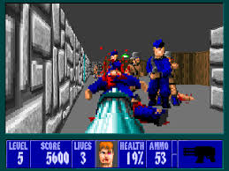

welcome to my blog, fist off here's a lil somthing about who i am, i grew up in a small town in cheshire called windford. i spent a lot of my childhood messing around on many dufferent consoles playing gsmes, i remember playing wolfenstein 3d on my uncle's windows pc, it was unlike any other game i had played, it blew my lil mind, computers remained a big part of my life mainly because of my love for gaming.
as i grew older it became clear i had a problem, my eyesight had began to deteriorate, the cause remained elusive for alomst a decade, i spent my esucational life being treated although i had leatning difficulties, it's an unfortunate case, with the nature of my condition which is called "stargardt's disease" often goes undiagnosed until around mid teenage yeats.
^ that's what they call fundus autofluorescence , it's a photograph of the retina, those flecks/speckles you see is lipofuscin, it's a byproduct of vitamin A, this is normally cleared away but the faulty gene that causes stargardt's stops the production of the ABCA4 protein that breaks it down, so it clumps up and accumulates killing photorecepter cells which is the cause of the sight loss. given my eyesight had plummited to over 20/200 in both eyes, i come to rely heavily on devices to help me see, from using my phone camera as a digital magnifier to using accessibility options on computers and games consoles, if it wasn't for this technology my life would be a major pain in the ass!
apart from gaming i took a lot of interest in martial arts, i did muay thai training for a lil and i spent a few years in the air cadets. i had a lot of time on my hands, i would bounce around all sorts of topics whether it was psychology, politics, history, philosophy, sciene and or nature etc.. i love a good documentary abput pretty much anythong, i just like to soak up dat knowledge